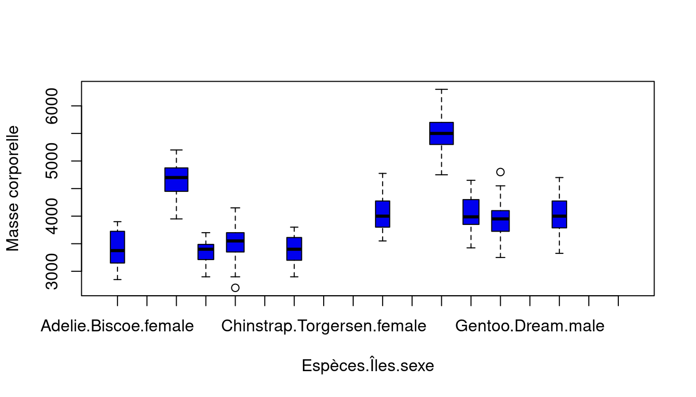
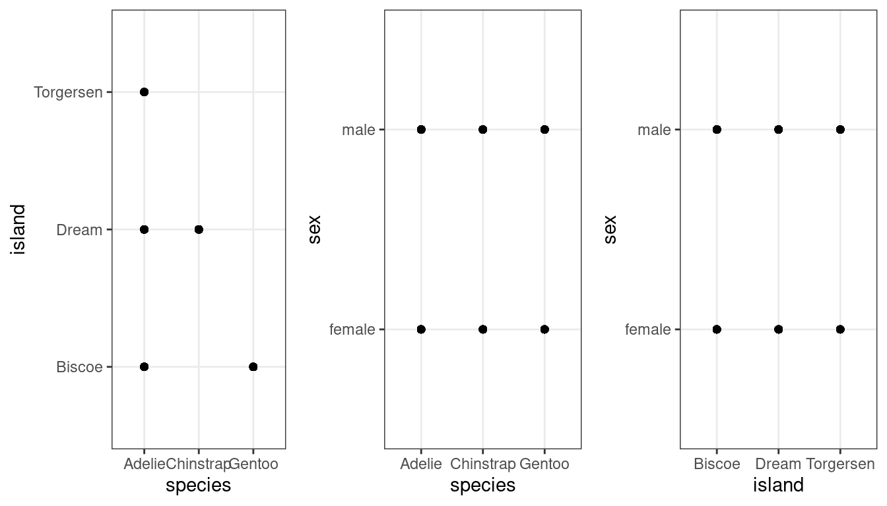

<!DOCTYPE html>
<html xmlns="http://www.w3.org/1999/xhtml" lang="en" xml:lang="en"><head>

<meta charset="utf-8">
<meta name="generator" content="quarto-1.3.353">

<meta name="viewport" content="width=device-width, initial-scale=1.0, user-scalable=yes">


<title>The Companion book a M1 MODE student should have! - Mixed models in ecology</title>
<style>
code{white-space: pre-wrap;}
span.smallcaps{font-variant: small-caps;}
div.columns{display: flex; gap: min(4vw, 1.5em);}
div.column{flex: auto; overflow-x: auto;}
div.hanging-indent{margin-left: 1.5em; text-indent: -1.5em;}
ul.task-list{list-style: none;}
ul.task-list li input[type="checkbox"] {
  width: 0.8em;
  margin: 0 0.8em 0.2em -1em; /* quarto-specific, see https://github.com/quarto-dev/quarto-cli/issues/4556 */ 
  vertical-align: middle;
}
/* CSS for syntax highlighting */
pre > code.sourceCode { white-space: pre; position: relative; }
pre > code.sourceCode > span { display: inline-block; line-height: 1.25; }
pre > code.sourceCode > span:empty { height: 1.2em; }
.sourceCode { overflow: visible; }
code.sourceCode > span { color: inherit; text-decoration: inherit; }
div.sourceCode { margin: 1em 0; }
pre.sourceCode { margin: 0; }
@media screen {
div.sourceCode { overflow: auto; }
}
@media print {
pre > code.sourceCode { white-space: pre-wrap; }
pre > code.sourceCode > span { text-indent: -5em; padding-left: 5em; }
}
pre.numberSource code
  { counter-reset: source-line 0; }
pre.numberSource code > span
  { position: relative; left: -4em; counter-increment: source-line; }
pre.numberSource code > span > a:first-child::before
  { content: counter(source-line);
    position: relative; left: -1em; text-align: right; vertical-align: baseline;
    border: none; display: inline-block;
    -webkit-touch-callout: none; -webkit-user-select: none;
    -khtml-user-select: none; -moz-user-select: none;
    -ms-user-select: none; user-select: none;
    padding: 0 4px; width: 4em;
  }
pre.numberSource { margin-left: 3em;  padding-left: 4px; }
div.sourceCode
  {   }
@media screen {
pre > code.sourceCode > span > a:first-child::before { text-decoration: underline; }
}
</style>


<script src="site_libs/quarto-nav/quarto-nav.js"></script>
<script src="site_libs/quarto-nav/headroom.min.js"></script>
<script src="site_libs/clipboard/clipboard.min.js"></script>
<script src="site_libs/quarto-search/autocomplete.umd.js"></script>
<script src="site_libs/quarto-search/fuse.min.js"></script>
<script src="site_libs/quarto-search/quarto-search.js"></script>
<meta name="quarto:offset" content="./">
<script src="site_libs/quarto-html/quarto.js"></script>
<script src="site_libs/quarto-html/popper.min.js"></script>
<script src="site_libs/quarto-html/tippy.umd.min.js"></script>
<script src="site_libs/quarto-html/anchor.min.js"></script>
<link href="site_libs/quarto-html/tippy.css" rel="stylesheet">
<link href="site_libs/quarto-html/quarto-syntax-highlighting.css" rel="stylesheet" id="quarto-text-highlighting-styles">
<script src="site_libs/bootstrap/bootstrap.min.js"></script>
<link href="site_libs/bootstrap/bootstrap-icons.css" rel="stylesheet">
<link href="site_libs/bootstrap/bootstrap.min.css" rel="stylesheet" id="quarto-bootstrap" data-mode="light">
<script id="quarto-search-options" type="application/json">{
  "location": "navbar",
  "copy-button": false,
  "collapse-after": 3,
  "panel-placement": "end",
  "type": "overlay",
  "limit": 20,
  "language": {
    "search-no-results-text": "No results",
    "search-matching-documents-text": "matching documents",
    "search-copy-link-title": "Copy link to search",
    "search-hide-matches-text": "Hide additional matches",
    "search-more-match-text": "more match in this document",
    "search-more-matches-text": "more matches in this document",
    "search-clear-button-title": "Clear",
    "search-detached-cancel-button-title": "Cancel",
    "search-submit-button-title": "Submit"
  }
}</script>

  <script src="https://polyfill.io/v3/polyfill.min.js?features=es6"></script>
  <script src="https://cdn.jsdelivr.net/npm/mathjax@3/es5/tex-chtml-full.js" type="text/javascript"></script>

<link rel="stylesheet" href="styles.css">
</head>

<body class="nav-fixed">

<div id="quarto-search-results"></div>
  <header id="quarto-header" class="headroom fixed-top">
    <nav class="navbar navbar-expand-lg navbar-dark ">
      <div class="navbar-container container-fluid">
      <div class="navbar-brand-container">
    <a class="navbar-brand" href="./index.html">
    <span class="navbar-title">The Companion book a M1 MODE student should have!</span>
    </a>
  </div>
            <div id="quarto-search" class="" title="Search"></div>
          <button class="navbar-toggler" type="button" data-bs-toggle="collapse" data-bs-target="#navbarCollapse" aria-controls="navbarCollapse" aria-expanded="false" aria-label="Toggle navigation" onclick="if (window.quartoToggleHeadroom) { window.quartoToggleHeadroom(); }">
  <span class="navbar-toggler-icon"></span>
</button>
          <div class="collapse navbar-collapse" id="navbarCollapse">
            <ul class="navbar-nav navbar-nav-scroll me-auto">
  <li class="nav-item compact">
    <a class="nav-link" href="https://github.com/MarieEtienne/MODE_reproduciblescience" rel="" target=""><i class="bi bi-github" role="img" aria-label="GitHub">
</i> 
 <span class="menu-text"></span></a>
  </li>  
  <li class="nav-item">
    <a class="nav-link" href="./prior_course.html" rel="" target="">
 <span class="menu-text">Before the class</span></a>
  </li>  
  <li class="nav-item">
    <a class="nav-link" href="./instructions.html" rel="" target="">
 <span class="menu-text">Instructions</span></a>
  </li>  
  <li class="nav-item dropdown ">
    <a class="nav-link dropdown-toggle" href="#" id="nav-menu-courses-materials" role="button" data-bs-toggle="dropdown" aria-expanded="false" rel="" target="">
 <span class="menu-text">Courses Materials</span>
    </a>
    <ul class="dropdown-menu" aria-labelledby="nav-menu-courses-materials">    
        <li>
    <a class="dropdown-item" href="https://marieetienne.github.io/reproductibilite/_presentation/english_version.html" rel="" target="">
 <span class="dropdown-text">Git Intro</span></a>
  </li>  
    </ul>
  </li>
</ul>
            <ul class="navbar-nav navbar-nav-scroll ms-auto">
  <li class="nav-item dropdown ">
    <a class="nav-link dropdown-toggle" href="#" id="nav-menu-m1-mode-survival-book-by-the-m2-students" role="button" data-bs-toggle="dropdown" aria-expanded="false" rel="" target="">
 <span class="menu-text">M1 MODE Survival book by the M2 students</span>
    </a>
    <ul class="dropdown-menu dropdown-menu-end" aria-labelledby="nav-menu-m1-mode-survival-book-by-the-m2-students">    
        <li>
    <a class="dropdown-item" href="./chapter_dependance.html" rel="" target="">
 <span class="dropdown-text">Dependent data</span></a>
  </li>  
        <li>
    <a class="dropdown-item" href="./Mixed_models.html" rel="" target="">
 <span class="dropdown-text">Mixed models in Ecology</span></a>
  </li>  
        <li>
    <a class="dropdown-item" href="./simple_chapter.html" rel="" target="">
 <span class="dropdown-text">A simple chapter with no code</span></a>
  </li>  
        <li>
    <a class="dropdown-item" href="./r_chapter.html" rel="" target="">
 <span class="dropdown-text">A chapter using R</span></a>
  </li>  
        <li>
    <a class="dropdown-item" href="./python_chapter.html" rel="" target="">
 <span class="dropdown-text">A chapter using Python</span></a>
  </li>  
    </ul>
  </li>
</ul>
            <div class="quarto-navbar-tools">
</div>
          </div> <!-- /navcollapse -->
      </div> <!-- /container-fluid -->
    </nav>
</header>
<!-- content -->
<div id="quarto-content" class="quarto-container page-columns page-rows-contents page-layout-article page-navbar">
<!-- sidebar -->
<!-- margin-sidebar -->
    <div id="quarto-margin-sidebar" class="sidebar margin-sidebar">
        <nav id="TOC" role="doc-toc" class="toc-active">
    <h2 id="toc-title">On this page</h2>
   
  <ul>
  <li><a href="#introduction" id="toc-introduction" class="nav-link active" data-scroll-target="#introduction">Introduction:</a></li>
  <li><a href="#model-création-du-model-abdou" id="toc-model-création-du-model-abdou" class="nav-link" data-scroll-target="#model-création-du-model-abdou">Model: création du model : Abdou</a></li>
  <li><a href="#calcule-matriciel-antoine" id="toc-calcule-matriciel-antoine" class="nav-link" data-scroll-target="#calcule-matriciel-antoine">Calcule matriciel : Antoine</a></li>
  <li><a href="#structure-de-dependance-odin" id="toc-structure-de-dependance-odin" class="nav-link" data-scroll-target="#structure-de-dependance-odin">Structure de dependance : Odin</a>
  <ul class="collapse">
  <li><a href="#cas-des-mesures-répétées" id="toc-cas-des-mesures-répétées" class="nav-link" data-scroll-target="#cas-des-mesures-répétées">Cas des Mesures répétées</a></li>
  <li><a href="#cas-de-lautocorrelation-spatiale" id="toc-cas-de-lautocorrelation-spatiale" class="nav-link" data-scroll-target="#cas-de-lautocorrelation-spatiale">Cas de l’autocorrelation spatiale</a></li>
  </ul></li>
  <li><a href="#questiion-pour-la-prof-comment-combiner-efffet-aléatoire-de-groupe-et-effet-aléatoire-spatialtemporelle" id="toc-questiion-pour-la-prof-comment-combiner-efffet-aléatoire-de-groupe-et-effet-aléatoire-spatialtemporelle" class="nav-link" data-scroll-target="#questiion-pour-la-prof-comment-combiner-efffet-aléatoire-de-groupe-et-effet-aléatoire-spatialtemporelle">Questiion pour la prof: comment combiner efffet aléatoire de groupe et effet aléatoire spatial/temporelle ?</a>
  <ul class="collapse">
  <li><a href="#application-ael" id="toc-application-ael" class="nav-link" data-scroll-target="#application-ael">Application : Ael</a></li>
  </ul></li>
  <li><a href="#importation-des-donnees" id="toc-importation-des-donnees" class="nav-link" data-scroll-target="#importation-des-donnees">IMPORTATION DES DONNEES</a></li>
  <li><a href="#exploration-des-données" id="toc-exploration-des-données" class="nav-link" data-scroll-target="#exploration-des-données">EXPLORATION DES DONNÉES</a>
  <ul class="collapse">
  <li><a href="#valeurs-aberrantes-dans-y-et-distribution-de-y" id="toc-valeurs-aberrantes-dans-y-et-distribution-de-y" class="nav-link" data-scroll-target="#valeurs-aberrantes-dans-y-et-distribution-de-y">1.Valeurs aberrantes dans <span class="math inline">\(Y\)</span> et distribution de <span class="math inline">\(Y\)</span></a></li>
  <li><a href="#a-pour-les-xs-qui-sont-quantitatifs-vérifier-les-valeurs-aberrantes-et-la-distribution" id="toc-a-pour-les-xs-qui-sont-quantitatifs-vérifier-les-valeurs-aberrantes-et-la-distribution" class="nav-link" data-scroll-target="#a-pour-les-xs-qui-sont-quantitatifs-vérifier-les-valeurs-aberrantes-et-la-distribution">2.a Pour les <span class="math inline">\(Xs\)</span> qui sont quantitatifs : vérifier les valeurs aberrantes et la distribution</a></li>
  <li><a href="#b-pour-les-xs-qui-sont-catégoriques-nombre-de-niveaux-et-nombre-dindividus-par-niveau" id="toc-b-pour-les-xs-qui-sont-catégoriques-nombre-de-niveaux-et-nombre-dindividus-par-niveau" class="nav-link" data-scroll-target="#b-pour-les-xs-qui-sont-catégoriques-nombre-de-niveaux-et-nombre-dindividus-par-niveau">2.b Pour les <span class="math inline">\(Xs\)</span> qui sont catégoriques : nombre de niveaux et nombre d’individus par niveau</a></li>
  <li><a href="#analyse-des-relations-potentielles-y-vs-xs" id="toc-analyse-des-relations-potentielles-y-vs-xs" class="nav-link" data-scroll-target="#analyse-des-relations-potentielles-y-vs-xs">Analyse des relations potentielles Y vs Xs</a></li>
  <li><a href="#analyse-des-interactions-possibles-entre-les-deux-variables-indépendantes" id="toc-analyse-des-interactions-possibles-entre-les-deux-variables-indépendantes" class="nav-link" data-scroll-target="#analyse-des-interactions-possibles-entre-les-deux-variables-indépendantes">Analyse des interactions possibles entre les deux variables indépendantes</a></li>
  <li><a href="#vérifier-la-colinéarité-entre-les-x" id="toc-vérifier-la-colinéarité-entre-les-x" class="nav-link" data-scroll-target="#vérifier-la-colinéarité-entre-les-x">Vérifier la colinéarité entre les X</a></li>
  </ul></li>
  <li><a href="#analyse-statistique" id="toc-analyse-statistique" class="nav-link" data-scroll-target="#analyse-statistique">ANALYSE STATISTIQUE</a>
  <ul class="collapse">
  <li><a href="#construction-du-modèle" id="toc-construction-du-modèle" class="nav-link" data-scroll-target="#construction-du-modèle">Construction du modèle</a></li>
  </ul></li>
  </ul>
</nav>
    </div>
<!-- main -->
<main class="content" id="quarto-document-content">

<header id="title-block-header" class="quarto-title-block default">
<div class="quarto-title">
<h1 class="title">Mixed models in ecology</h1>
</div>


<div class="quarto-title-meta">

    
  
    
  </div>
  

</header>

<p>MERCI DE CHARGER ICI LES PACKAGES QUE VOUS UTILISEE</p>
<div class="cell">
<div class="sourceCode cell-code" id="cb1"><pre class="sourceCode r code-with-copy"><code class="sourceCode r"><span id="cb1-1"><a href="#cb1-1" aria-hidden="true" tabindex="-1"></a><span class="fu">library</span>(nlme)</span></code><button title="Copy to Clipboard" class="code-copy-button"><i class="bi"></i></button></pre></div>
</div>
<section id="introduction" class="level2">
<h2 class="anchored" data-anchor-id="introduction">Introduction:</h2>
<p><strong>General Linear Models</strong>, such as linear regressions, ANOVA, and ANCOVA, are commonly employed to depict the relationships between a dependent variable, denoted as (Y), and one or more independent variables ((X_1, X_2, …, X_n)). These models are based on several assumptions, including homoscedasticity of the variance, non-collinearity of residuals, and normality of residuals. Generalized Linear Models (GLMs) can address homoscedasticity and normality assumptions by accommodating data from different distributions like Poisson, binomial, or Gamma distributions, which are often encountered in ecology. However, it is crucial to validate the non-collinearity of residuals.</p>
<p>In biological and ecological experiments, the assumption of independence of measurements, necessary for non-collinearity of residuals, is frequently violated. This is because measurements are often correlated within families, regions, repeated on the same individuals, or across time and sites. In such cases, it becomes necessary to employ <strong>mixed models</strong>. These models, extensions of both general and generalized linear models, consider the correlation of measurements by introducing individuals, regions, families, or other factors as <strong>random effects</strong> in the models. This incorporation allows for a more accurate representation of the complex dependencies present in the data.</p>
<section id="what-is-a-random-effect-and-how-do-i-determine-if-my-effect-is-random-or-fixed" class="level4">
<h4 class="anchored" data-anchor-id="what-is-a-random-effect-and-how-do-i-determine-if-my-effect-is-random-or-fixed">What is a random effect, and how do I determine if my effect is random or fixed?</h4>
<p>To clarify the distinction between fixed and random effects, let’s examine two examples:</p>
<ul>
<li><p><strong>Example 1: Comparing Individual Cars</strong></p>
<p>Abdel, Antonio, Odeline, and Aela want to compare the oil consumption of their individual cars. They conduct a test by measuring oil consumption during a 30-kilometer drive, repeated five times in a day, with consistent traffic conditions and driving patterns. The dataset consists of one factor with four levels (representing the four cars) and five replicates each. Performing a one-way ANOVA allows them to determine which car is the most economical. In this scenario, the factor “car” is <strong>fixed</strong>, and the analysis provides conclusions specific to the four studied cars.</p></li>
<li><p><strong>Example 2: Assessing Homogeneity within a Car Model</strong></p>
<p>A car constructor aims to evaluate the homogeneity of oil consumption within a car model, treating the model as a population of cars with expected heterogeneity in gas consumption. Similar to Example 1, they measure oil consumption by driving each car 30 kilometers, five times in a day, resulting in a dataset with one factor and four levels, each with five replicates. Unlike the first example, the cars in this case were sampled from a larger population, and the objective is to draw conclusions about the entire population, not just the sampled cars. Here, a mixed model with the factor ‘car’ as a <strong>random factor</strong> should be used.</p>
<p>In summary, a factor is designated as fixed when the experimenter intentionally chooses a limited number of levels for investigation, aiming to assess the impact of each level on the response variable. On the other hand, a factor is considered random when the selected levels represent only a sample from all possible levels. In this case, the objective is to understand the variability in the response variable attributed to this factor.</p></li>
</ul>
<p>For example, let’s consider a researcher investigating the influence of the number of training sessions per week on the concentration of red blood cells in recreational athletes. The researcher collects data from 50 athletes in a local club who train between 1 and 5 times a week. Initially planning a simple ANOVA with the number of training sessions as the main factor, the researcher discovers that most athletes in the dataset belong to only 10 families, leading to non-independent measurements. To address this issue, the researcher opts for a mixed model, treating the number of training sessions as a fixed factor and the family as a random factor. This approach allows the exploration of variability between families without the intention of directly comparing them.</p>
<p>Now that we have a general understanding of what mixed models are, we can delve into the mathematical formalism of these models. In this chapter, you will discover how <strong>matrices</strong> can be employed to create mixed models, explore the various <strong>dependency structures</strong> that exist, and ultimately, find an <strong>implementation</strong> of mixed models in R.</p>
</section>
</section>
<section id="model-création-du-model-abdou" class="level2">
<h2 class="anchored" data-anchor-id="model-création-du-model-abdou">Model: création du model : Abdou</h2>
<p>The linear mixed model can be formulated as follows:</p>
<p><span class="math display">\[
Y_{i} = \beta X_{i} + \gamma_i Z_{i} + \varepsilon_{i}
\]</span></p>
<p>where:</p>
<ul>
<li><span class="math inline">\(Y_i = n_i \times 1\)</span> measurements for subject <span class="math inline">\(i\)</span></li>
<li><span class="math inline">\(X_i = n_i \times p\)</span> matrix of vectors for fixed effects</li>
<li><span class="math inline">\(beta_i= p \times 1\)</span> parameters for fixed effects</li>
<li><span class="math inline">\(Z_i = n_i \times p\)</span> matrix of vectors for random effects</li>
<li><span class="math inline">\(gamma_i = r \times 1\)</span> parameters for random effects</li>
<li><span class="math inline">\(varepsilon_i = n_i \times 1\)</span> residuals for individual <span class="math inline">\(i\)</span></li>
</ul>
<p>A mixed effects model incorporates random effects (<span class="math inline">\(\gamma_i\)</span>), or a combination of both random and fixed effects (<span class="math inline">\(\beta\)</span>), whereas a standard linear model includes only fixed effects. The distinction between these two lies in the nature of the effects related to the treatment under study.</p>
<p>When it is evident that the researcher intends to compare particular, predefined levels of a treatment, those levels are considered fixed effects. Conversely, when the levels of the treatment are drawn from a larger population of possible levels, the treatment is treated as a random effect.</p>
<p>In addition, random effects are included in a model when there is a correlation or dependence among the observations that cannot be ignored.</p>
<p><strong>RANDOM VARIABLE</strong> = « something that could not be known before sampling/measurement/observation”.</p>
<p>In matrix form, the mixed model is written as:</p>
<p><span class="math display">\[
Y \sim \mathcal{N{n}}(X\theta, \Sigma)
\]</span> where:</p>
<p><span class="math inline">\(Y\)</span> is the response vector of the observations, <span class="math inline">\(X\theta\)</span> is the expectation of the response vector <span class="math inline">\(Y\)</span> and <span class="math inline">\(\Sigma\)</span> is the variance matrix. We can note that if the response vector <span class="math inline">\(Y\)</span> is of dimension <span class="math inline">\(n\)</span>, the matrix <span class="math inline">\(\Sigma\)</span> is of dimensions <span class="math inline">\(n \times n\)</span>. Since <span class="math inline">\(\Sigma\)</span> is symmetric, it comprises <span class="math inline">\(n(n + 1)/2\)</span> parameters. This is because, in a symmetric matrix, the elements above (or below) the main diagonal are the same as those below (or above), reducing the total number of parameters needed to describe the matrix.</p>
<p>However, the limitation of the available data prevents considering models where all these <span class="math inline">\(n(n + 1)/2\)</span> parameters are free. This restriction arises from the need to have a significant amount of data to reliably estimate each parameter, which quickly becomes unrealistic with a limited dataset.</p>
<p>To address this issue, the linear mixed-effects model proposes an approach where a structure is imposed on the variance matrix <span class="math inline">\(\Sigma\)</span>. This structure, governed by a limited number of parameters called “variance parameters,” denoted <span class="math inline">\(\psi\)</span>, reduces the number of parameters needed to describe the covariance matrix. Consequently, the model can be realistically adapted even with a limited amount of data, while accounting for the correlation between observations within the framework of linear mixed-effects models. The model parameters include <span class="math inline">\(\theta\)</span> for the expectation and <span class="math inline">\(\psi\)</span> for the variance.</p>
</section>
<section id="calcule-matriciel-antoine" class="level2">
<h2 class="anchored" data-anchor-id="calcule-matriciel-antoine">Calcule matriciel : Antoine</h2>
<p><span class="math display">\[
  M_{2\times2} = \left( {\begin{array}{cc}
    A &amp; B \\
    C &amp; D \\
  \end{array} } \right)
\]</span> Il est possible de rencontrer des modèles linéaires (mixtes) sous forme matricielle, de part la concision de la forme. Il est donc naturel de présenter cette forme dans le cadre des modèles mixtes.</p>
<p>Pour rappel, un modèle linéaire, de type regression linéaire, avec <span class="math inline">\(p\)</span> variables explicatives peut s’écrire sous la forme <span class="math display">\[y_i = \beta_0 + \beta_1x_i^{(1)} + \ldots + \beta_px_i^{(p)} + \varepsilon_i\]</span>, où <span class="math inline">\(y_i\)</span> représente une observation de la variable réponse <span class="math inline">\(Y\)</span> pour l’individu <span class="math inline">\(i\)</span>, <span class="math inline">\(\beta_0\)</span> l’ordonnée à l’origine, <span class="math inline">\(\beta_1,...,\beta_p\)</span> les coefficients associés à chaque variables explicatives <span class="math inline">\(X_1,...,X_p\)</span>, <span class="math inline">\(x_i^{(1)},...,x_i^{(p)}\)</span> p observations (pour les p variables explicatives) pour l’individu <span class="math inline">\(i\)</span>, et <span class="math inline">\(e_i\)</span> un terme d’erreur associé à cet individu <span class="math inline">\(i\)</span>. On peut voir <span class="math inline">\(e_i\)</span> comme une réalisation d’une variable aléatoire <span class="math inline">\(E_i\)</span> distribuée selon une loi normale <span class="math inline">\(\mathcal{N}(0,\sigma^2)\)</span>. En notant <span class="math display">\[y=\begin{pmatrix}
y_1\\
\vdots\\
y_n\\
\end{pmatrix}\]</span>, <span class="math display">\[X=\begin{pmatrix}
1&amp;x_1^{(1)} &amp; \ldots &amp; x_1^{(p)}\\
\vdots &amp; \vdots &amp; \ldots &amp; \vdots \\
1 &amp; x_n^{(1)} &amp; \ldots &amp; x_n^{(p)}
\end{pmatrix}\]</span>, <span class="math display">\[\theta=\begin{pmatrix}
\beta_0\\
\vdots\\
\beta_p\\
\end{pmatrix}\]</span> et <span class="math display">\[e=\begin{pmatrix}
\varepsilon_0\\
\vdots\\
\varepsilon_n\\
\end{pmatrix}\]</span>, on peut réécrire le modèle précédent sous la forme <span class="math display">\[y=X\theta+e\]</span>. Ici, <span class="math inline">\(e\)</span> est un vecteur de n réalisations indépendantes d’une variable aléatoire <span class="math inline">\(E_i\)</span> suivant une loi noramle <span class="math inline">\(\mathcal{N}(0,\sigma^2)\)</span>. Ainsi, <span class="math inline">\(e\)</span> est lui même une réalisation d’une variable aléatoire <span class="math inline">\(E\)</span> de distribution <span class="math inline">\(\mathcal{N}_n(0,\sigma^2I_n)\)</span> (<span class="math inline">\(e_i\)</span> est une observation de la variable aléatoire <span class="math inline">\(E_i\)</span> distribuée selon une loi normale <span class="math inline">\(\mathcal{N}(0,\sigma^2)\)</span>). De la même manière, <span class="math inline">\(y\)</span> est une observation de <span class="math inline">\(Y=X\theta+E\)</span> où <span class="math inline">\(Y\sim\mathcal{N}_n(X\theta,\sigma^2I_n)\)</span> (<span class="math inline">\(y_i\)</span> est l’observation de <span class="math inline">\(Y_i\)</span> distribuée selon une loi normale <span class="math inline">\(\mathcal{N}((X\theta)_i,\sigma^2)\)</span>). Ainsi, en introduisant <span class="math inline">\(Y\)</span> et <span class="math inline">\(E\)</span>, le modèle précédent peut s’écrire <span class="math inline">\(Y=X\theta+E\)</span> où <span class="math inline">\(\mathrm{E}\stackrel{iid}\sim\mathcal{N}_n(0,\sigma^2I_n)\)</span>.</p>
<p>Par définition, la réponse moyenne est de <span class="math inline">\(X\theta\)</span>, plus ou moins un terme d’erreur qui en moyenne vaut 0 mais qui varie de <span class="math inline">\(\sigma^2I_n\)</span>. Ainsi, on peut écrire <span class="math inline">\(Y\sim\mathcal{N}_n(X\theta,\sigma^2I_n)\)</span>. On remarque qu’en écrivant <span class="math inline">\(\mathrm{E}\stackrel{iid}\sim\mathcal{N}_n(0,\sigma^2I_n)\)</span>, toutes les erreurs ont la même variance (<span class="math inline">\(\sigma^2\)</span>) et deux individus (statistiques) car tous les échantillons sont indépendants. On verra par la suite que si cette condition d’indépendance n’est pas respectée, toutes les erreurs n’ont pas la même variance, on parle de structure de dépendance. La dépendance entre les mesures détermine la structure de dépendance (mesures répétées dans le temps, individus groupés par une ascendance commune,…).</p>
</section>
<section id="structure-de-dependance-odin" class="level2">
<h2 class="anchored" data-anchor-id="structure-de-dependance-odin">Structure de dependance : Odin</h2>
<section id="cas-des-mesures-répétées" class="level3">
<h3 class="anchored" data-anchor-id="cas-des-mesures-répétées">Cas des Mesures répétées</h3>
<p>On considère cette fois une expérience visant à évaluer l’effet d’un régime sur la prise de poids d’un animal au cours du temps. Plusieurs animaux (indicés par <span class="math inline">\(j\)</span>) reçoivent chaque régime (noté <span class="math inline">\(i\)</span>) et un animal ne reçoit qu’un régime au cours de l’expérience. On mesure le poids, noté <span class="math inline">\(Y_{ij}\)</span>, de chaque animal au bout de t semaines (<span class="math inline">\(t = 1, . . . , T\)</span>). On parle donc de mesures répétées, au cours du temps sur un même individu. De telles mesures sont aussi fréquemment appelées données <em>longitudinales</em>. Pour analyser ces résultats, on veut tenir compte du fait que les mesures faites au cours du temps sur un même animal ne sont pas indépendantes. A cette fin, on pourrait utiliser le modèle :</p>
<p><span class="math display">\[E(Y_{ijt}) = µ + α_i + γ_t + (αγ)_{it}\]</span></p>
<p>avec</p>
<p><span class="math display">\[Cov(Y_{ijt}, Y_{i'j't'}) = \left\{
  \begin{array}{ll}
  σ^2ρ \ \ si \ \ (i, j) = (i_0, j_0) \\
     0 \ sinon \
   \end{array}
  \right.\]</span></p>
<p>Dans ce modèle, la covariance entre deux mesures faites aux temps t et t’ sur un même modèle est constante, quel que soit l’intervalle de temps qui sépare les deux mesures.</p>
<p><strong>Modèle</strong> On propose ici un modèle qui prend en compte l’aspect cinétique de l’expérience et prévoit que la dépendance entre deux mesures dépend de l’intervalle de temps qui les sépare. Une telle dépendance n’admet pas de représentation simple sous la forme d’un eet aléatoire. On suppose donc que les poids sont gaussiens d’espérances respectives.</p>
<p><span class="math display">\[ E(Y_{ijt}) = µ + α_i + γ_t + (αγ)_{it} \]</span> <strong>Structure de dépendance</strong> On suppose de plus que toutes les mesures ont la même variance</p>
<p><span class="math display">\[ V(Y_{ijt} =  σ^2) \]</span> et que la covariance entre elles vaut</p>
<p><span class="math display">\[Cov(Y_{ijt}, Y_{i'j't'}) = \left\{
  \begin{array}{ll}
  σ^2ρ^{|t-t'|} \ \ si \ \ (i, j) = (i', j') \\
     0 \ sinon \
   \end{array}
  \right.\]</span> Cette structure suppose que les mesures faites sur des animaux diérents sont indépendantes. On suppose de plus que |ρ| &lt; 1, ce qui implique que celles faites sur un même animal sont d’autant moins corrélées que l’intervalle de temps est grand. Cette forme de covariance correspond à un processus auto-régressif d’ordre 1, généralement noté AR(1). Ce modèle comporte deux paramètres de variance (aussi appelés composantes de la variance) : la corrélation temporelle ρ et la variance de chaque observation σ 2, soit</p>
<p><span class="math display">\[
  ψ = \left( {\begin{array}{cc}
    ρ \\
    σ^2 \\
  \end{array} } \right)
\]</span> <em>Ecriture matricielle</em> Du fait de l’indépendance entre les mesures obtenues sur des animaux différents, la matrice de variance Σ a aussi une même forme diagonale par blocs mais le bloc R diffère :</p>
<p><span class="math display">\[
  R = \left( {\begin{array}{cc}
     σ^2 &amp; σ^2ρ &amp; σ^2ρ^2 &amp; ... &amp; σ^2ρ^{T-1}\\
     σ^2ρ &amp; ... &amp; ... &amp; ... &amp; ...\\
     σ^2ρ^2 &amp; ... &amp; σ^2 &amp; ... &amp; σ^2ρ^2\\
     ... &amp; ... &amp; ... &amp; ... &amp; σ^2ρ\\
    σ^2ρ^{T-1} &amp; ... &amp; σ^2ρ^2 &amp; σ^2ρ &amp; σ^2\\
  \end{array} } \right)
\]</span></p>
<div class="cell">
<div class="sourceCode cell-code" id="cb2"><pre class="sourceCode r code-with-copy"><code class="sourceCode r"><span id="cb2-1"><a href="#cb2-1" aria-hidden="true" tabindex="-1"></a><span class="co">#Read the data</span></span>
<span id="cb2-2"><a href="#cb2-2" aria-hidden="true" tabindex="-1"></a>d<span class="ot">=</span><span class="fu">read.delim</span>(</span>
<span id="cb2-3"><a href="#cb2-3" aria-hidden="true" tabindex="-1"></a><span class="st">"http://dnett.github.io/S510/RepeatedMeasures.txt"</span>)</span>
<span id="cb2-4"><a href="#cb2-4" aria-hidden="true" tabindex="-1"></a><span class="co">#Create Factors</span></span>
<span id="cb2-5"><a href="#cb2-5" aria-hidden="true" tabindex="-1"></a>d<span class="sc">$</span>Program <span class="ot">=</span> <span class="fu">factor</span>(d<span class="sc">$</span>Program)</span>
<span id="cb2-6"><a href="#cb2-6" aria-hidden="true" tabindex="-1"></a>d<span class="sc">$</span>Subj <span class="ot">=</span> <span class="fu">factor</span>(d<span class="sc">$</span>Subj)</span>
<span id="cb2-7"><a href="#cb2-7" aria-hidden="true" tabindex="-1"></a>d<span class="sc">$</span>Timef <span class="ot">=</span> <span class="fu">factor</span>(d<span class="sc">$</span>Time)</span></code><button title="Copy to Clipboard" class="code-copy-button"><i class="bi"></i></button></pre></div>
</div>
<div class="cell">
<div class="sourceCode cell-code" id="cb3"><pre class="sourceCode r code-with-copy"><code class="sourceCode r"><span id="cb3-1"><a href="#cb3-1" aria-hidden="true" tabindex="-1"></a>o.ar1 <span class="ot">=</span> <span class="fu">gls</span>(Strength <span class="sc">~</span> Program <span class="sc">*</span> Timef, <span class="at">data =</span> d,<span class="at">correlation =</span> <span class="fu">corAR1</span>(<span class="at">form =</span> <span class="sc">~</span><span class="dv">1</span> <span class="sc">|</span> Subj))</span></code><button title="Copy to Clipboard" class="code-copy-button"><i class="bi"></i></button></pre></div>
</div>
<div class="cell">
<div class="sourceCode cell-code" id="cb4"><pre class="sourceCode r code-with-copy"><code class="sourceCode r"><span id="cb4-1"><a href="#cb4-1" aria-hidden="true" tabindex="-1"></a><span class="fu">summary</span>(o.ar1)</span></code><button title="Copy to Clipboard" class="code-copy-button"><i class="bi"></i></button></pre></div>
<div class="cell-output cell-output-stdout">
<pre><code>Generalized least squares fit by REML
  Model: Strength ~ Program * Timef 
  Data: d 
       AIC      BIC    logLik
  1312.804 1403.306 -633.4018

Correlation Structure: AR(1)
 Formula: ~1 | Subj 
 Parameter estimate(s):
      Phi 
0.9517769 

Coefficients:
                    Value Std.Error  t-value p-value
(Intercept)      79.68750 0.8200605 97.17271  0.0000
Program2          1.36012 1.0885218  1.24951  0.2123
Program3          0.06250 1.1002267  0.05681  0.9547
Timef4            0.87500 0.2546762  3.43573  0.0007
Timef6            1.12500 0.3557980  3.16191  0.0017
Timef8            1.31250 0.4305201  3.04864  0.0025
Timef10           1.56250 0.4911919  3.18104  0.0016
Timef12           1.43750 0.5426737  2.64892  0.0084
Timef14           1.43750 0.5874975  2.44682  0.0149
Program2:Timef4  -0.25595 0.3380490 -0.75715  0.4494
Program3:Timef4  -0.67500 0.3416840 -1.97551  0.0489
Program2:Timef6  -0.26786 0.4722748 -0.56716  0.5709
Program3:Timef6  -0.87500 0.4773531 -1.83302  0.0676
Program2:Timef8   0.16369 0.5714584  0.28644  0.7747
Program3:Timef8  -1.01250 0.5776033 -1.75293  0.0804
Program2:Timef10  0.00893 0.6519923  0.01369  0.9891
Program3:Timef10 -1.51250 0.6590031 -2.29513  0.0223
Program2:Timef12  0.22917 0.7203275  0.31814  0.7506
Program3:Timef12 -1.58750 0.7280732 -2.18041  0.0298
Program2:Timef14  0.61012 0.7798251  0.78238  0.4345
Program3:Timef14 -1.58750 0.7882106 -2.01406  0.0447

 Correlation: 
                 (Intr) Prgrm2 Prgrm3 Timef4 Timef6 Timef8 Timf10 Timf12 Timf14
Program2         -0.753                                                        
Program3         -0.745  0.562                                                 
Timef4           -0.155  0.117  0.116                                          
Timef6           -0.217  0.163  0.162  0.699                                   
Timef8           -0.262  0.198  0.196  0.564  0.807                            
Timef10          -0.299  0.226  0.223  0.483  0.690  0.855                     
Timef12          -0.331  0.249  0.247  0.427  0.610  0.756  0.883              
Timef14          -0.358  0.270  0.267  0.386  0.551  0.682  0.797  0.901       
Program2:Timef4   0.117 -0.155 -0.087 -0.753 -0.526 -0.425 -0.364 -0.322 -0.291
Program3:Timef4   0.116 -0.087 -0.155 -0.745 -0.521 -0.420 -0.360 -0.318 -0.288
Program2:Timef6   0.163 -0.217 -0.122 -0.526 -0.753 -0.608 -0.520 -0.460 -0.415
Program3:Timef6   0.162 -0.122 -0.217 -0.521 -0.745 -0.601 -0.514 -0.455 -0.411
Program2:Timef8   0.198 -0.262 -0.147 -0.425 -0.608 -0.753 -0.644 -0.570 -0.514
Program3:Timef8   0.196 -0.147 -0.262 -0.420 -0.601 -0.745 -0.638 -0.563 -0.509
Program2:Timef10  0.226 -0.299 -0.168 -0.364 -0.520 -0.644 -0.753 -0.665 -0.600
Program3:Timef10  0.223 -0.168 -0.299 -0.360 -0.514 -0.638 -0.745 -0.658 -0.594
Program2:Timef12  0.249 -0.331 -0.186 -0.322 -0.460 -0.570 -0.665 -0.753 -0.679
Program3:Timef12  0.247 -0.186 -0.331 -0.318 -0.455 -0.563 -0.658 -0.745 -0.672
Program2:Timef14  0.270 -0.358 -0.201 -0.291 -0.415 -0.514 -0.600 -0.679 -0.753
Program3:Timef14  0.267 -0.201 -0.358 -0.288 -0.411 -0.509 -0.594 -0.672 -0.745
                 Pr2:T4 Pr3:T4 Pr2:T6 Pr3:T6 Pr2:T8 Pr3:T8 P2:T10 P3:T10 P2:T12
Program2                                                                       
Program3                                                                       
Timef4                                                                         
Timef6                                                                         
Timef8                                                                         
Timef10                                                                        
Timef12                                                                        
Timef14                                                                        
Program2:Timef4                                                                
Program3:Timef4   0.562                                                        
Program2:Timef6   0.699  0.392                                                 
Program3:Timef6   0.392  0.699  0.562                                          
Program2:Timef8   0.564  0.317  0.807  0.453                                   
Program3:Timef8   0.317  0.564  0.453  0.807  0.562                            
Program2:Timef10  0.483  0.271  0.690  0.388  0.855  0.480                     
Program3:Timef10  0.271  0.483  0.388  0.690  0.480  0.855  0.562              
Program2:Timef12  0.427  0.240  0.610  0.343  0.756  0.425  0.883  0.496       
Program3:Timef12  0.240  0.427  0.343  0.610  0.425  0.756  0.496  0.883  0.562
Program2:Timef14  0.386  0.217  0.551  0.310  0.682  0.383  0.797  0.447  0.901
Program3:Timef14  0.217  0.386  0.310  0.551  0.383  0.682  0.447  0.797  0.506
                 P3:T12 P2:T14
Program2                      
Program3                      
Timef4                        
Timef6                        
Timef8                        
Timef10                       
Timef12                       
Timef14                       
Program2:Timef4               
Program3:Timef4               
Program2:Timef6               
Program3:Timef6               
Program2:Timef8               
Program3:Timef8               
Program2:Timef10              
Program3:Timef10              
Program2:Timef12              
Program3:Timef12              
Program2:Timef14  0.506       
Program3:Timef14  0.901  0.562

Standardized residuals:
        Min          Q1         Med          Q3         Max 
-2.32270892 -0.62422802 -0.02903386  0.63874495  2.83080149 

Residual standard error: 3.280242 
Degrees of freedom: 399 total; 378 residual</code></pre>
</div>
</div>
</section>
<section id="cas-de-lautocorrelation-spatiale" class="level3">
<h3 class="anchored" data-anchor-id="cas-de-lautocorrelation-spatiale">Cas de l’autocorrelation spatiale</h3>
<p><em>Structure de dépendance</em> Là encore, on veut prendre en compte la dépendance due à l’éventuelle proximité spatiale entre les sites auxquels ont été effectuées les mesures. Pour cela, on note d(i, i’) la distance qui sépare les sites i et i’ et on pose</p>
<p><span class="math display">\[Cov(Y_i, Y_i{'}) = e^{−δ.d(i,i')}\]</span></p>
<p><em>Ecriture matricielle</em> Comme dans le cas des mesures répétées, il n’existe pas d’écriture simple en termes d’effets aléatoires. De plus, comme toutes les mesures sont dépendantes, la matrice Σ n’est plus diagonale par bloc et s’écrit :</p>
<p><span class="math display">\[
  Σ = \left( {\begin{array}{cc}
     σ^2 + γ^2 &amp; ...&amp; ...&amp; ...\\
     ...&amp; σ^2 + γ^2 &amp; e^{−δ.d(i,i')} &amp;...\\
     ...&amp; e^{−δ.d(i,i')}  &amp; σ^2 + γ^2 &amp;...\\
...&amp; ...&amp; ... &amp; σ^2 + γ^2\\
  \end{array} } \right)
\]</span></p>
<div class="cell">
<div class="sourceCode cell-code" id="cb6"><pre class="sourceCode r code-with-copy"><code class="sourceCode r"><span id="cb6-1"><a href="#cb6-1" aria-hidden="true" tabindex="-1"></a><span class="fu">set.seed</span>(<span class="dv">3</span>)  </span>
<span id="cb6-2"><a href="#cb6-2" aria-hidden="true" tabindex="-1"></a>n <span class="ot">&lt;-</span> <span class="dv">100</span></span>
<span id="cb6-3"><a href="#cb6-3" aria-hidden="true" tabindex="-1"></a></span>
<span id="cb6-4"><a href="#cb6-4" aria-hidden="true" tabindex="-1"></a>loc <span class="ot">&lt;-</span> <span class="fu">data.frame</span>(<span class="at">LAT =</span> <span class="fu">runif</span>(n, <span class="dv">144</span>, <span class="dv">150</span>), <span class="at">LONG =</span> <span class="fu">runif</span>(n,</span>
<span id="cb6-5"><a href="#cb6-5" aria-hidden="true" tabindex="-1"></a>    <span class="sc">-</span><span class="dv">26</span>, <span class="sc">-</span><span class="dv">20</span>))</span>
<span id="cb6-6"><a href="#cb6-6" aria-hidden="true" tabindex="-1"></a></span>
<span id="cb6-7"><a href="#cb6-7" aria-hidden="true" tabindex="-1"></a><span class="fu">library</span>(sp)</span></code><button title="Copy to Clipboard" class="code-copy-button"><i class="bi"></i></button></pre></div>
<div class="cell-output cell-output-stderr">
<pre><code>The legacy packages maptools, rgdal, and rgeos, underpinning the sp package,
which was just loaded, will retire in October 2023.
Please refer to R-spatial evolution reports for details, especially
https://r-spatial.org/r/2023/05/15/evolution4.html.
It may be desirable to make the sf package available;
package maintainers should consider adding sf to Suggests:.
The sp package is now running under evolution status 2
     (status 2 uses the sf package in place of rgdal)</code></pre>
</div>
<div class="sourceCode cell-code" id="cb8"><pre class="sourceCode r code-with-copy"><code class="sourceCode r"><span id="cb8-1"><a href="#cb8-1" aria-hidden="true" tabindex="-1"></a>grid <span class="ot">&lt;-</span> <span class="fu">expand.grid</span>(<span class="at">LAT =</span> <span class="fu">seq</span>(<span class="dv">144</span>, <span class="dv">150</span>, <span class="at">l =</span> <span class="dv">100</span>), <span class="at">LONG =</span> <span class="fu">seq</span>(<span class="sc">-</span><span class="dv">26</span>,</span>
<span id="cb8-2"><a href="#cb8-2" aria-hidden="true" tabindex="-1"></a>    <span class="sc">-</span><span class="dv">20</span>, <span class="at">l =</span> <span class="dv">100</span>))</span>
<span id="cb8-3"><a href="#cb8-3" aria-hidden="true" tabindex="-1"></a><span class="fu">coordinates</span>(grid) <span class="ot">&lt;-</span> <span class="er">~</span>LAT <span class="sc">+</span> LONG</span>
<span id="cb8-4"><a href="#cb8-4" aria-hidden="true" tabindex="-1"></a></span>
<span id="cb8-5"><a href="#cb8-5" aria-hidden="true" tabindex="-1"></a></span>
<span id="cb8-6"><a href="#cb8-6" aria-hidden="true" tabindex="-1"></a><span class="co"># Set up distance matrix</span></span>
<span id="cb8-7"><a href="#cb8-7" aria-hidden="true" tabindex="-1"></a>distance <span class="ot">&lt;-</span> <span class="fu">as.matrix</span>(<span class="fu">dist</span>(<span class="fu">as.data.frame</span>(loc)))  <span class="co">#* 1/min(distance[lower.tri(distance)])</span></span>
<span id="cb8-8"><a href="#cb8-8" aria-hidden="true" tabindex="-1"></a><span class="co"># Generate random variable</span></span>
<span id="cb8-9"><a href="#cb8-9" aria-hidden="true" tabindex="-1"></a>delta <span class="ot">&lt;-</span> <span class="fl">0.5</span></span>
<span id="cb8-10"><a href="#cb8-10" aria-hidden="true" tabindex="-1"></a>Vmat <span class="ot">&lt;-</span> <span class="cf">function</span>(n, <span class="at">mu =</span> <span class="dv">0</span>, <span class="at">V =</span> <span class="fu">matrix</span>(<span class="dv">1</span>)) {</span>
<span id="cb8-11"><a href="#cb8-11" aria-hidden="true" tabindex="-1"></a>    p <span class="ot">&lt;-</span> <span class="fu">length</span>(mu)</span>
<span id="cb8-12"><a href="#cb8-12" aria-hidden="true" tabindex="-1"></a>    <span class="cf">if</span> (<span class="fu">any</span>(<span class="fu">is.na</span>(<span class="fu">match</span>(<span class="fu">dim</span>(V), p))))</span>
<span id="cb8-13"><a href="#cb8-13" aria-hidden="true" tabindex="-1"></a>        <span class="fu">stop</span>(<span class="st">"Dimension problem!"</span>)</span>
<span id="cb8-14"><a href="#cb8-14" aria-hidden="true" tabindex="-1"></a>    D <span class="ot">&lt;-</span> <span class="fu">chol</span>(V)</span>
<span id="cb8-15"><a href="#cb8-15" aria-hidden="true" tabindex="-1"></a>    <span class="fu">t</span>(<span class="fu">matrix</span>(<span class="fu">rnorm</span>(n <span class="sc">*</span> p), <span class="at">ncol =</span> p) <span class="sc">%*%</span> D <span class="sc">+</span> <span class="fu">rep</span>(mu,</span>
<span id="cb8-16"><a href="#cb8-16" aria-hidden="true" tabindex="-1"></a>        <span class="fu">rep</span>(n, p)))</span>
<span id="cb8-17"><a href="#cb8-17" aria-hidden="true" tabindex="-1"></a>}</span>
<span id="cb8-18"><a href="#cb8-18" aria-hidden="true" tabindex="-1"></a>V <span class="ot">&lt;-</span> <span class="fu">Vmat</span>(<span class="dv">1</span>, <span class="fu">rep</span>(<span class="dv">0</span>, n), <span class="fu">exp</span>(<span class="sc">-</span>delta <span class="sc">*</span> distance))</span>
<span id="cb8-19"><a href="#cb8-19" aria-hidden="true" tabindex="-1"></a>x <span class="ot">&lt;-</span> <span class="fu">rnorm</span>(n, <span class="dv">30</span>, <span class="dv">10</span>)</span>
<span id="cb8-20"><a href="#cb8-20" aria-hidden="true" tabindex="-1"></a><span class="co"># image(cbind(simgrid, V))</span></span>
<span id="cb8-21"><a href="#cb8-21" aria-hidden="true" tabindex="-1"></a>y <span class="ot">&lt;-</span> <span class="dv">50</span> <span class="sc">+</span> <span class="dv">1</span> <span class="sc">*</span> x <span class="sc">+</span> <span class="dv">60</span> <span class="sc">*</span> V  <span class="co">#+ rnorm(n,0,1)</span></span>
<span id="cb8-22"><a href="#cb8-22" aria-hidden="true" tabindex="-1"></a>data.spatialCor <span class="ot">&lt;-</span> <span class="fu">data.frame</span>(y, x, loc)</span></code><button title="Copy to Clipboard" class="code-copy-button"><i class="bi"></i></button></pre></div>
</div>
<div class="cell">
<div class="sourceCode cell-code" id="cb9"><pre class="sourceCode r code-with-copy"><code class="sourceCode r"><span id="cb9-1"><a href="#cb9-1" aria-hidden="true" tabindex="-1"></a>data.spatialCor.glsExp <span class="ot">&lt;-</span> <span class="fu">gls</span>(y <span class="sc">~</span> x, <span class="at">data =</span> data.spatialCor,</span>
<span id="cb9-2"><a href="#cb9-2" aria-hidden="true" tabindex="-1"></a>    <span class="at">correlation =</span> <span class="fu">corExp</span>(<span class="at">form =</span> <span class="sc">~</span>LAT <span class="sc">+</span> LONG, <span class="at">nugget =</span> <span class="cn">TRUE</span>),</span>
<span id="cb9-3"><a href="#cb9-3" aria-hidden="true" tabindex="-1"></a>    <span class="at">method =</span> <span class="st">"REML"</span>)</span></code><button title="Copy to Clipboard" class="code-copy-button"><i class="bi"></i></button></pre></div>
</div>
<div class="cell">
<div class="sourceCode cell-code" id="cb10"><pre class="sourceCode r code-with-copy"><code class="sourceCode r"><span id="cb10-1"><a href="#cb10-1" aria-hidden="true" tabindex="-1"></a><span class="fu">summary</span>(data.spatialCor.glsExp)</span></code><button title="Copy to Clipboard" class="code-copy-button"><i class="bi"></i></button></pre></div>
<div class="cell-output cell-output-stdout">
<pre><code>Generalized least squares fit by REML
  Model: y ~ x 
  Data: data.spatialCor 
       AIC      BIC    logLik
  974.3235 987.2484 -482.1618

Correlation Structure: Exponential spatial correlation
 Formula: ~LAT + LONG 
 Parameter estimate(s):
    range    nugget 
1.6956723 0.1280655 

Coefficients:
               Value Std.Error  t-value p-value
(Intercept) 65.90018 21.824752 3.019516  0.0032
x            0.94572  0.286245 3.303886  0.0013

 Correlation: 
  (Intr)
x -0.418

Standardized residuals:
       Min         Q1        Med         Q3        Max 
-1.6019483 -0.3507695  0.1608776  0.6451751  2.1331505 

Residual standard error: 47.68716 
Degrees of freedom: 100 total; 98 residual</code></pre>
</div>
</div>
</section>
</section>
<section id="questiion-pour-la-prof-comment-combiner-efffet-aléatoire-de-groupe-et-effet-aléatoire-spatialtemporelle" class="level2">
<h2 class="anchored" data-anchor-id="questiion-pour-la-prof-comment-combiner-efffet-aléatoire-de-groupe-et-effet-aléatoire-spatialtemporelle">Questiion pour la prof: comment combiner efffet aléatoire de groupe et effet aléatoire spatial/temporelle ?</h2>
<p><span class="math display">\[ E(Y_{ijt}) = µ + α_i + γ_t + (αγ)_{it} \]</span></p>
<section id="application-ael" class="level3">
<h3 class="anchored" data-anchor-id="application-ael">Application : Ael</h3>
<p>Pour cet exemple d’application de modèle mixte, nous allons utiliser un modèle mixte linéaire général. C’est un cas particulier de modèle linéaire général, dans lequel la réponse est quantitative et les variables prédictives sont à la fois quantitatives et qualitatives, et le modèle inclut des facteurs aléatoires pour tenir compte de la dépendance des données. Les modèles mixtes doivent respecter la normalité des résidus et l’homogénéité des variances.</p>
<p>—-&gt; Explications du jeu de données pinguins, présenter les variables (Ici, pourquoi pas expliquer le body mass des pinguins en fonction de species, sex et island, avec year en facteur aléatoire - anova modèle mixte)</p>
<p>—-&gt; Pas équilibré le nombre d’individus par niveaux pour les <span class="math inline">\(X\)</span>, important ??? —-&gt; Est-ce que les facteurs sont croisés (pour les interactions entre les <span class="math inline">\(X_s\)</span>) ??? —-&gt; Expliquer le graphe (pour les interactions entre les <span class="math inline">\(X_s\)</span>) —-&gt; TESTER LA COLINEARITE CAR LA CONSTRUCTION DU MODELE COMPLET NE MARCHE PAS DU A LA COLINEARITE, LE MODELE AVEC lme4::lmer SEMBLE MARCHER, MAIS IL FAUDRAIT CHECKER ET ENLEVER CETTE COLINEARITE DANS L’EXPLORATION DES DONNES DANS LA PARTIE D’AVANT —-&gt; Cites Yannick Outreman pour la structure et les lignes de code</p>
</section>
</section>
<section id="importation-des-donnees" class="level2">
<h2 class="anchored" data-anchor-id="importation-des-donnees">IMPORTATION DES DONNEES</h2>
<div class="cell">
<div class="sourceCode cell-code" id="cb12"><pre class="sourceCode r code-with-copy"><code class="sourceCode r"><span id="cb12-1"><a href="#cb12-1" aria-hidden="true" tabindex="-1"></a><span class="co"># Importation des données</span></span>
<span id="cb12-2"><a href="#cb12-2" aria-hidden="true" tabindex="-1"></a>df <span class="ot">&lt;-</span> <span class="fu">read.table</span>(<span class="st">"https://gist.githubusercontent.com/slopp/ce3b90b9168f2f921784de84fa445651/raw/4ecf3041f0ed4913e7c230758733948bc561f434/penguins.csv"</span>, <span class="at">sep =</span> <span class="st">","</span> , <span class="at">header =</span> <span class="cn">TRUE</span>)</span>
<span id="cb12-3"><a href="#cb12-3" aria-hidden="true" tabindex="-1"></a><span class="co"># Bien s'assurer que nos variables 'species', 'island' et 'sex' sont des facteurs</span></span>
<span id="cb12-4"><a href="#cb12-4" aria-hidden="true" tabindex="-1"></a>df<span class="sc">$</span>species<span class="ot">=</span><span class="fu">as.factor</span>(df<span class="sc">$</span>species)</span>
<span id="cb12-5"><a href="#cb12-5" aria-hidden="true" tabindex="-1"></a>df<span class="sc">$</span>island<span class="ot">=</span><span class="fu">as.factor</span>(df<span class="sc">$</span>island)</span>
<span id="cb12-6"><a href="#cb12-6" aria-hidden="true" tabindex="-1"></a>df<span class="sc">$</span>sex<span class="ot">=</span><span class="fu">as.factor</span>(df<span class="sc">$</span>sex)</span>
<span id="cb12-7"><a href="#cb12-7" aria-hidden="true" tabindex="-1"></a></span>
<span id="cb12-8"><a href="#cb12-8" aria-hidden="true" tabindex="-1"></a><span class="co"># On vérifie qu'il n'y a pas de valeurs manquantes</span></span>
<span id="cb12-9"><a href="#cb12-9" aria-hidden="true" tabindex="-1"></a><span class="fu">colSums</span>(<span class="fu">is.na</span>(df))</span></code><button title="Copy to Clipboard" class="code-copy-button"><i class="bi"></i></button></pre></div>
<div class="cell-output cell-output-stdout">
<pre><code>            rowid           species            island    bill_length_mm 
                0                 0                 0                 2 
    bill_depth_mm flipper_length_mm       body_mass_g               sex 
                2                 2                 2                11 
             year 
                0 </code></pre>
</div>
</div>
<p>On voit qu’il y a des valeurs manquantes, dont 2 pour la variable réponse <span class="math inline">\(Y\)</span> “body_mass_g’ et 11 pour la variable explicative <span class="math inline">\(X\)</span> ‘sex’. On va supprimer les lignes qui présentes les valeurs manquantes.</p>
<div class="cell">
<div class="sourceCode cell-code" id="cb14"><pre class="sourceCode r code-with-copy"><code class="sourceCode r"><span id="cb14-1"><a href="#cb14-1" aria-hidden="true" tabindex="-1"></a><span class="co"># On repère les lignes qui présentes les valeurs manquantes.</span></span>
<span id="cb14-2"><a href="#cb14-2" aria-hidden="true" tabindex="-1"></a><span class="fu">which</span>(<span class="fu">is.na</span>(df<span class="sc">$</span>body_mass_g), <span class="at">arr.ind=</span><span class="cn">TRUE</span>)</span></code><button title="Copy to Clipboard" class="code-copy-button"><i class="bi"></i></button></pre></div>
<div class="cell-output cell-output-stdout">
<pre><code>[1]   4 272</code></pre>
</div>
<div class="sourceCode cell-code" id="cb16"><pre class="sourceCode r code-with-copy"><code class="sourceCode r"><span id="cb16-1"><a href="#cb16-1" aria-hidden="true" tabindex="-1"></a><span class="fu">which</span>(<span class="fu">is.na</span>(df<span class="sc">$</span>sex), <span class="at">arr.ind=</span><span class="cn">TRUE</span>)</span></code><button title="Copy to Clipboard" class="code-copy-button"><i class="bi"></i></button></pre></div>
<div class="cell-output cell-output-stdout">
<pre><code> [1]   4   9  10  11  12  48 179 219 257 269 272</code></pre>
</div>
<div class="sourceCode cell-code" id="cb18"><pre class="sourceCode r code-with-copy"><code class="sourceCode r"><span id="cb18-1"><a href="#cb18-1" aria-hidden="true" tabindex="-1"></a><span class="co">#On supprime les lignes 4, 9, 10, 11, 12, 48, 179, 219, 257, 269, et 272.</span></span>
<span id="cb18-2"><a href="#cb18-2" aria-hidden="true" tabindex="-1"></a>df<span class="ot">=</span>df[<span class="sc">-</span><span class="fu">c</span>(<span class="dv">4</span>,<span class="dv">9</span>,<span class="dv">10</span>,<span class="dv">11</span>,<span class="dv">12</span>,<span class="dv">48</span>,<span class="dv">179</span>,<span class="dv">219</span>,<span class="dv">257</span>,<span class="dv">269</span>,<span class="dv">272</span>), ]</span>
<span id="cb18-3"><a href="#cb18-3" aria-hidden="true" tabindex="-1"></a></span>
<span id="cb18-4"><a href="#cb18-4" aria-hidden="true" tabindex="-1"></a><span class="co"># On vérifie qu'il n'y a pas de valeurs manquantes</span></span>
<span id="cb18-5"><a href="#cb18-5" aria-hidden="true" tabindex="-1"></a><span class="fu">colSums</span>(<span class="fu">is.na</span>(df))</span></code><button title="Copy to Clipboard" class="code-copy-button"><i class="bi"></i></button></pre></div>
<div class="cell-output cell-output-stdout">
<pre><code>            rowid           species            island    bill_length_mm 
                0                 0                 0                 0 
    bill_depth_mm flipper_length_mm       body_mass_g               sex 
                0                 0                 0                 0 
             year 
                0 </code></pre>
</div>
<div class="sourceCode cell-code" id="cb20"><pre class="sourceCode r code-with-copy"><code class="sourceCode r"><span id="cb20-1"><a href="#cb20-1" aria-hidden="true" tabindex="-1"></a><span class="co">#Il n'y a plus de valeurs manquante.</span></span></code><button title="Copy to Clipboard" class="code-copy-button"><i class="bi"></i></button></pre></div>
</div>
</section>
<section id="exploration-des-données" class="level2">
<h2 class="anchored" data-anchor-id="exploration-des-données">EXPLORATION DES DONNÉES</h2>
<p>Avant toute analyse statistique, il est INDISPENSABLE d’explorer les données afin d’éviter toute erreur. Voici la liste des explorations à effectuer avant la modélisation :</p>
<ol type="1">
<li>Vérifier la présence de valeurs aberrantes dans <span class="math inline">\(Y\)</span> et la distribution des valeurs de <span class="math inline">\(Y\)</span>.</li>
<li>Si <span class="math inline">\(X\)</span> est une variable quantitative indépendante, vérifier la présence de valeurs aberrantes dans X et la distribution des valeurs de X. 2b. 2b. Si <span class="math inline">\(X\)</span> est une variable indépendante qualitative, analyser le nombre de niveaux et le nombre d’individus par niveau.</li>
<li>Analyser les relations potentielles entre <span class="math inline">\(Y\)</span> et les <span class="math inline">\(X_{s}\)</span>.</li>
<li>Vérifier la présence d’interactions entre <span class="math inline">\(X_{s}\)</span>.</li>
<li>Vérifier la présence de colinéarité entre <span class="math inline">\(X_{s}\)</span>.</li>
</ol>
<section id="valeurs-aberrantes-dans-y-et-distribution-de-y" class="level3">
<h3 class="anchored" data-anchor-id="valeurs-aberrantes-dans-y-et-distribution-de-y">1.Valeurs aberrantes dans <span class="math inline">\(Y\)</span> et distribution de <span class="math inline">\(Y\)</span></h3>
<div class="cell">
<div class="sourceCode cell-code" id="cb21"><pre class="sourceCode r code-with-copy"><code class="sourceCode r"><span id="cb21-1"><a href="#cb21-1" aria-hidden="true" tabindex="-1"></a><span class="fu">par</span>(<span class="at">mfrow=</span><span class="fu">c</span>(<span class="dv">2</span>,<span class="dv">2</span>))</span>
<span id="cb21-2"><a href="#cb21-2" aria-hidden="true" tabindex="-1"></a><span class="co"># Boxplot</span></span>
<span id="cb21-3"><a href="#cb21-3" aria-hidden="true" tabindex="-1"></a><span class="fu">boxplot</span>(df<span class="sc">$</span>body_mass_g,<span class="at">col=</span><span class="st">'blue'</span>,<span class="at">ylab=</span><span class="st">'Masse corporel'</span>)</span>
<span id="cb21-4"><a href="#cb21-4" aria-hidden="true" tabindex="-1"></a><span class="co"># Cleveland plot</span></span>
<span id="cb21-5"><a href="#cb21-5" aria-hidden="true" tabindex="-1"></a><span class="fu">dotchart</span>(df<span class="sc">$</span>body_mass_g,<span class="at">pch=</span><span class="dv">16</span>,<span class="at">col=</span><span class="st">'blue'</span>,<span class="at">xlab=</span><span class="st">'Masse corporel'</span>)</span>
<span id="cb21-6"><a href="#cb21-6" aria-hidden="true" tabindex="-1"></a><span class="co"># Histogram</span></span>
<span id="cb21-7"><a href="#cb21-7" aria-hidden="true" tabindex="-1"></a><span class="fu">hist</span>(df<span class="sc">$</span>body_mass_g,<span class="at">col=</span><span class="st">'blue'</span>,<span class="at">xlab=</span><span class="st">"Masse corporel"</span>,<span class="at">main=</span><span class="st">""</span>)</span>
<span id="cb21-8"><a href="#cb21-8" aria-hidden="true" tabindex="-1"></a><span class="co"># Quantile-Quantile plot</span></span>
<span id="cb21-9"><a href="#cb21-9" aria-hidden="true" tabindex="-1"></a><span class="fu">qqnorm</span>(df<span class="sc">$</span>body_mass_g,<span class="at">pch=</span><span class="dv">16</span>,<span class="at">col=</span><span class="st">'blue'</span>,<span class="at">xlab=</span><span class="st">''</span>)</span>
<span id="cb21-10"><a href="#cb21-10" aria-hidden="true" tabindex="-1"></a><span class="fu">qqline</span>(df<span class="sc">$</span>body_mass_g,<span class="at">col=</span><span class="st">'red'</span>)</span></code><button title="Copy to Clipboard" class="code-copy-button"><i class="bi"></i></button></pre></div>
<div class="cell-output-display">
<p></p>
</div>
</div>
<p>Ici, le Boxplot et le Cleveland Plot nous permettent de voir qu’il n’y a pas d’individus présentant des valeurs aberrantes. Le Cleveland Plot nous montre qu’il semble y avoir un groupe d’individus qui présentent une masse corporel entre 5000 et 6000g, alors que le reste du groupe se situe entre 3000 et 4000g. L’Histogramme et le QQ Plot nous montre que <span class="math inline">\(Y\)</span> suit difficilement un loi Normale… Ce n’est pas très grave, car la validité de modèle se base entre autre sur la normalité des résidus, que l’on démontrera par la suite.</p>
</section>
<section id="a-pour-les-xs-qui-sont-quantitatifs-vérifier-les-valeurs-aberrantes-et-la-distribution" class="level3">
<h3 class="anchored" data-anchor-id="a-pour-les-xs-qui-sont-quantitatifs-vérifier-les-valeurs-aberrantes-et-la-distribution">2.a Pour les <span class="math inline">\(Xs\)</span> qui sont quantitatifs : vérifier les valeurs aberrantes et la distribution</h3>
<p>Pas de prédicteur quantitatif ici.</p>
</section>
<section id="b-pour-les-xs-qui-sont-catégoriques-nombre-de-niveaux-et-nombre-dindividus-par-niveau" class="level3">
<h3 class="anchored" data-anchor-id="b-pour-les-xs-qui-sont-catégoriques-nombre-de-niveaux-et-nombre-dindividus-par-niveau">2.b Pour les <span class="math inline">\(Xs\)</span> qui sont catégoriques : nombre de niveaux et nombre d’individus par niveau</h3>
<div class="cell">
<div class="sourceCode cell-code" id="cb22"><pre class="sourceCode r code-with-copy"><code class="sourceCode r"><span id="cb22-1"><a href="#cb22-1" aria-hidden="true" tabindex="-1"></a><span class="co"># Factor Species</span></span>
<span id="cb22-2"><a href="#cb22-2" aria-hidden="true" tabindex="-1"></a><span class="fu">summary</span>(df<span class="sc">$</span>species)</span></code><button title="Copy to Clipboard" class="code-copy-button"><i class="bi"></i></button></pre></div>
<div class="cell-output cell-output-stdout">
<pre><code>   Adelie Chinstrap    Gentoo 
      146        68       119 </code></pre>
</div>
<div class="sourceCode cell-code" id="cb24"><pre class="sourceCode r code-with-copy"><code class="sourceCode r"><span id="cb24-1"><a href="#cb24-1" aria-hidden="true" tabindex="-1"></a><span class="co"># Factor Island</span></span>
<span id="cb24-2"><a href="#cb24-2" aria-hidden="true" tabindex="-1"></a><span class="fu">summary</span>(df<span class="sc">$</span>island)</span></code><button title="Copy to Clipboard" class="code-copy-button"><i class="bi"></i></button></pre></div>
<div class="cell-output cell-output-stdout">
<pre><code>   Biscoe     Dream Torgersen 
      163       123        47 </code></pre>
</div>
<div class="sourceCode cell-code" id="cb26"><pre class="sourceCode r code-with-copy"><code class="sourceCode r"><span id="cb26-1"><a href="#cb26-1" aria-hidden="true" tabindex="-1"></a><span class="co"># Factor Sex</span></span>
<span id="cb26-2"><a href="#cb26-2" aria-hidden="true" tabindex="-1"></a><span class="fu">summary</span>(df<span class="sc">$</span>sex)</span></code><button title="Copy to Clipboard" class="code-copy-button"><i class="bi"></i></button></pre></div>
<div class="cell-output cell-output-stdout">
<pre><code>female   male 
   165    168 </code></pre>
</div>
</div>
<p>La variable ‘species’ présente 3 niveaux : Adelie, Chinstrap et Gentoo. Le nombre d’individus entre les 3 niveaux n’est pas équilibré, avec moins d’individus pour l’espèce Chinstrap. La variable ‘island’ présente 3 niveaux : Biscoe, Dream et Torgersen. Le nombre d’individus entre les 3 niveaux n’est pas équilibré, avec moins d’individus pour l’île Torgersen. La variable ‘sex’ présente 2 niveaux : female et male. Le nombre d’individus par niveau s’approche de l’équilibre.</p>
</section>
<section id="analyse-des-relations-potentielles-y-vs-xs" class="level3">
<h3 class="anchored" data-anchor-id="analyse-des-relations-potentielles-y-vs-xs">Analyse des relations potentielles Y vs Xs</h3>
<p>Nous pouvons analyser graphiquement les relations possibles entre Y et X. Attention, cette analyse graphique des relations entre Y et X <strong>ne prédit en aucun cas l’importance de la relation</strong>. La modélisation statistique reste le seul moyen d’identifier les relations.</p>
<div class="cell">
<div class="sourceCode cell-code" id="cb28"><pre class="sourceCode r code-with-copy"><code class="sourceCode r"><span id="cb28-1"><a href="#cb28-1" aria-hidden="true" tabindex="-1"></a><span class="fu">par</span>(<span class="at">mfrow=</span><span class="fu">c</span>(<span class="dv">1</span>,<span class="dv">1</span>))</span>
<span id="cb28-2"><a href="#cb28-2" aria-hidden="true" tabindex="-1"></a><span class="co"># Espèces</span></span>
<span id="cb28-3"><a href="#cb28-3" aria-hidden="true" tabindex="-1"></a><span class="fu">plot</span>(df<span class="sc">$</span>body_mass_g<span class="sc">~</span>df<span class="sc">$</span>species,<span class="at">pch=</span><span class="dv">16</span>,<span class="at">col=</span><span class="st">'blue'</span>,<span class="at">xlab=</span><span class="st">'Espèces'</span>,<span class="at">ylab=</span><span class="st">'Masse corporel en g'</span>)</span></code><button title="Copy to Clipboard" class="code-copy-button"><i class="bi"></i></button></pre></div>
<div class="cell-output-display">
<p></p>
</div>
<div class="sourceCode cell-code" id="cb29"><pre class="sourceCode r code-with-copy"><code class="sourceCode r"><span id="cb29-1"><a href="#cb29-1" aria-hidden="true" tabindex="-1"></a><span class="co"># Îles</span></span>
<span id="cb29-2"><a href="#cb29-2" aria-hidden="true" tabindex="-1"></a><span class="fu">plot</span>(df<span class="sc">$</span>body_mass_g<span class="sc">~</span>df<span class="sc">$</span>island,<span class="at">pch=</span><span class="dv">16</span>,<span class="at">col=</span><span class="st">'blue'</span>,<span class="at">xlab=</span><span class="st">'Îles'</span>,<span class="at">ylab=</span><span class="st">'Masse corporel en g'</span>)</span></code><button title="Copy to Clipboard" class="code-copy-button"><i class="bi"></i></button></pre></div>
<div class="cell-output-display">
<p></p>
</div>
<div class="sourceCode cell-code" id="cb30"><pre class="sourceCode r code-with-copy"><code class="sourceCode r"><span id="cb30-1"><a href="#cb30-1" aria-hidden="true" tabindex="-1"></a><span class="co"># Sexe</span></span>
<span id="cb30-2"><a href="#cb30-2" aria-hidden="true" tabindex="-1"></a><span class="fu">plot</span>(df<span class="sc">$</span>body_mass_g<span class="sc">~</span>df<span class="sc">$</span>sex,<span class="at">pch=</span><span class="dv">16</span>,<span class="at">col=</span><span class="st">'blue'</span>,<span class="at">xlab=</span><span class="st">'Sexe'</span>,<span class="at">ylab=</span><span class="st">'Masse corporel en g'</span>)</span></code><button title="Copy to Clipboard" class="code-copy-button"><i class="bi"></i></button></pre></div>
<div class="cell-output-display">
<p></p>
</div>
</div>
<p>COncernant l’espèce, on peut voir que Gentoo présente une masse corporel plus élevée (entre 5000 et 6000g) que les deux autres espèces (entre 3000 et 4000g). Concernant les îles, on peut voir que les individus présents sur Biscoe présentent une masse corporel plus élevée (entre 5000 et 6000g) que les individus présents sur les deux autres îles (entre 3000 et 4000g). Enfin, concernant le sexe, les mâles semblent présenter une masse corporel un peu plus importante que les femelles.</p>
</section>
<section id="analyse-des-interactions-possibles-entre-les-deux-variables-indépendantes" class="level3">
<h3 class="anchored" data-anchor-id="analyse-des-interactions-possibles-entre-les-deux-variables-indépendantes">Analyse des interactions possibles entre les deux variables indépendantes</h3>
<p>Ici, nous allons considérer l’interaction entre les trois facteurs étudiés. Pour estimer la présence d’effets interactifs, nous développons une approche graphique. Rappelons que l’interaction entre deux facteurs ne peut être testée que si les facteurs sont croisés (c’est-à-dire que tous les niveaux d’un traitement sont représentés dans tous les niveaux de l’autre traitement et réciproquement = un plan factoriel). Ce point doit être testé avant.</p>
<div class="cell">
<div class="sourceCode cell-code" id="cb31"><pre class="sourceCode r code-with-copy"><code class="sourceCode r"><span id="cb31-1"><a href="#cb31-1" aria-hidden="true" tabindex="-1"></a><span class="co"># Les facteurs sont croisé ? Dépend du design experimental</span></span>
<span id="cb31-2"><a href="#cb31-2" aria-hidden="true" tabindex="-1"></a></span>
<span id="cb31-3"><a href="#cb31-3" aria-hidden="true" tabindex="-1"></a><span class="co"># Interaction Species:Island:Sex</span></span>
<span id="cb31-4"><a href="#cb31-4" aria-hidden="true" tabindex="-1"></a><span class="fu">par</span>(<span class="at">mfrow=</span><span class="fu">c</span>(<span class="dv">1</span>,<span class="dv">1</span>))</span>
<span id="cb31-5"><a href="#cb31-5" aria-hidden="true" tabindex="-1"></a><span class="fu">boxplot</span>(df<span class="sc">$</span>body_mass_g<span class="sc">~</span>df<span class="sc">$</span>species<span class="sc">*</span>df<span class="sc">$</span>island<span class="sc">*</span>df<span class="sc">$</span>sex, <span class="at">varwidth =</span> <span class="cn">TRUE</span>, <span class="at">xlab =</span> <span class="st">"Espèces.Îles.sexe"</span>, <span class="at">ylab =</span> <span class="st">"Masse corporelle"</span>, <span class="at">col=</span><span class="st">'blue2'</span>, <span class="at">main =</span> <span class="st">""</span>)</span></code><button title="Copy to Clipboard" class="code-copy-button"><i class="bi"></i></button></pre></div>
<div class="cell-output-display">
<p></p>
</div>
</div>
<p>Explications</p>
</section>
<section id="vérifier-la-colinéarité-entre-les-x" class="level3">
<h3 class="anchored" data-anchor-id="vérifier-la-colinéarité-entre-les-x">Vérifier la colinéarité entre les X</h3>
<p>La colinéarité fait référence à la situation dans laquelle deux ou plusieurs variables prédictives de colinéarité sont étroitement liées les unes aux autres. La présence de colinéarité peut poser des problèmes dans le contexte de la régression, car il peut être difficile de séparer les effets individuels des variables colinéaires sur la réponse.</p>
<p>Ici, nous allons tester la colinéarité entre nos 3 variables prédictives :</p>
<div class="cell">
<div class="sourceCode cell-code" id="cb32"><pre class="sourceCode r code-with-copy"><code class="sourceCode r"><span id="cb32-1"><a href="#cb32-1" aria-hidden="true" tabindex="-1"></a><span class="fu">library</span>(ggplot2)</span>
<span id="cb32-2"><a href="#cb32-2" aria-hidden="true" tabindex="-1"></a><span class="fu">library</span>(gridExtra)</span>
<span id="cb32-3"><a href="#cb32-3" aria-hidden="true" tabindex="-1"></a><span class="co"># ploting Species by Island</span></span>
<span id="cb32-4"><a href="#cb32-4" aria-hidden="true" tabindex="-1"></a><span class="fu">ggplot</span>(df, <span class="fu">aes</span>(<span class="at">x=</span>species, <span class="at">y=</span>island)) <span class="sc">+</span></span>
<span id="cb32-5"><a href="#cb32-5" aria-hidden="true" tabindex="-1"></a>  <span class="fu">geom_point</span>() <span class="sc">+</span></span>
<span id="cb32-6"><a href="#cb32-6" aria-hidden="true" tabindex="-1"></a>  <span class="fu">theme_bw</span>() <span class="ot">-&gt;</span> p1</span>
<span id="cb32-7"><a href="#cb32-7" aria-hidden="true" tabindex="-1"></a></span>
<span id="cb32-8"><a href="#cb32-8" aria-hidden="true" tabindex="-1"></a><span class="co"># ploting Species by Sex</span></span>
<span id="cb32-9"><a href="#cb32-9" aria-hidden="true" tabindex="-1"></a><span class="fu">ggplot</span>(df, <span class="fu">aes</span>(<span class="at">x=</span>species, <span class="at">y=</span>sex)) <span class="sc">+</span></span>
<span id="cb32-10"><a href="#cb32-10" aria-hidden="true" tabindex="-1"></a>  <span class="fu">geom_point</span>() <span class="sc">+</span></span>
<span id="cb32-11"><a href="#cb32-11" aria-hidden="true" tabindex="-1"></a>  <span class="fu">theme_bw</span>() <span class="ot">-&gt;</span> p2</span>
<span id="cb32-12"><a href="#cb32-12" aria-hidden="true" tabindex="-1"></a></span>
<span id="cb32-13"><a href="#cb32-13" aria-hidden="true" tabindex="-1"></a><span class="co"># ploting Island by Sex</span></span>
<span id="cb32-14"><a href="#cb32-14" aria-hidden="true" tabindex="-1"></a><span class="fu">ggplot</span>(df, <span class="fu">aes</span>(<span class="at">x=</span>island, <span class="at">y=</span>sex)) <span class="sc">+</span></span>
<span id="cb32-15"><a href="#cb32-15" aria-hidden="true" tabindex="-1"></a>  <span class="fu">geom_point</span>() <span class="sc">+</span></span>
<span id="cb32-16"><a href="#cb32-16" aria-hidden="true" tabindex="-1"></a>  <span class="fu">theme_bw</span>() <span class="ot">-&gt;</span> p3</span>
<span id="cb32-17"><a href="#cb32-17" aria-hidden="true" tabindex="-1"></a></span>
<span id="cb32-18"><a href="#cb32-18" aria-hidden="true" tabindex="-1"></a><span class="co"># Ploting side-by-side</span></span>
<span id="cb32-19"><a href="#cb32-19" aria-hidden="true" tabindex="-1"></a><span class="fu">marrangeGrob</span>(<span class="fu">list</span>(p1,p2,p3), <span class="at">nrow=</span><span class="dv">1</span>, <span class="at">ncol=</span><span class="dv">3</span>, <span class="at">top=</span><span class="cn">NULL</span>)</span></code><button title="Copy to Clipboard" class="code-copy-button"><i class="bi"></i></button></pre></div>
<div class="cell-output-display">
<p></p>
</div>
</div>
<p>On peut voir dans notre exemple que pour l’intéraction entre Species et Sex, il y a bien les deux modalités du sexe par espèces, et pour l’intéraction entre Island et Sex, qu’il y a bien les deux modalités du sexe par îles. Seulement, on peut remarquer que pour l’intéraction entre Species et Island, toutes les îles ne comportent pas toutes les espèces! On ne pourra donc pas tester l’influence des îles et des espèces aux vues de ce résultat. On décide donc par la suite de supprimer la variable Island de notre analyse. On testera l’influence de l’espèce et du sexe sur la masse corporelle des pinguins, avec toujours les années en effet aléatoire.</p>
</section>
</section>
<section id="analyse-statistique" class="level2">
<h2 class="anchored" data-anchor-id="analyse-statistique">ANALYSE STATISTIQUE</h2>
<section id="construction-du-modèle" class="level3">
<h3 class="anchored" data-anchor-id="construction-du-modèle">Construction du modèle</h3>
<p>Pour la modélisation statistique, nous analysons d’abord le modèle complet (modèle contenant toutes les variables indépendantes à tester).</p>
<p>Pour obtenir le modèle candidat (modèle ne contenant que les termes significatifs) à partir du modèle complet, nous utiliserons le <strong>MODÈLE DE ‘BACKWARD SELECTION’</strong>, c’est-à-dire la sélection du modèle basée sur la significativité des termes. Selon cette approche, on commence par créer le modèle complet avec toutes les variables d’intérêt, puis on abandonne la variable la moins significative, tant qu’elle n’est pas significative. Nous continuons en réajustant successivement des modèles réduits et en appliquant la même règle jusqu’à ce que toutes les variables restantes soient significatives. La suppression des termes non significatifs doit suivre les deux étapes suivantes: - Premièrement, on supprime successivement les interactions non significatives. - Deuxièmement, on supprime successivement les effets principaux non significatifs. Un effet principal n’est supprimé que s’il est non significatif ET s’il n’est pas contenu dans une interaction significative.</p>
<p>Dans cet exemple, on considère une mesure de dépendance au niveau des années (par ex., une mesure de la masse faite en 2009 dépend de la mesure faite en 2008 qui elle même dépend de la mesure réalisée en 2007). La présence de l’effet aléatoire de l’année s’intégrera non pas avec la fonction lm, mais lme (du package nlme).</p>
<div class="cell">
<div class="sourceCode cell-code" id="cb33"><pre class="sourceCode r code-with-copy"><code class="sourceCode r"><span id="cb33-1"><a href="#cb33-1" aria-hidden="true" tabindex="-1"></a><span class="fu">library</span>(nlme)</span>
<span id="cb33-2"><a href="#cb33-2" aria-hidden="true" tabindex="-1"></a><span class="co"># Modèle complet</span></span>
<span id="cb33-3"><a href="#cb33-3" aria-hidden="true" tabindex="-1"></a><span class="co">#mod1&lt;-lme(fixed=body_mass_g~species*sex,random=~1|year,data=df)</span></span>
<span id="cb33-4"><a href="#cb33-4" aria-hidden="true" tabindex="-1"></a><span class="co">#lme4::lmer(body_mass_g~species*sex + (1|year), data=df)</span></span>
<span id="cb33-5"><a href="#cb33-5" aria-hidden="true" tabindex="-1"></a></span>
<span id="cb33-6"><a href="#cb33-6" aria-hidden="true" tabindex="-1"></a>mod2<span class="ot">&lt;-</span><span class="fu">lme</span>(body_mass_g<span class="sc">~</span>species</span>
<span id="cb33-7"><a href="#cb33-7" aria-hidden="true" tabindex="-1"></a>              <span class="sc">+</span> sex</span>
<span id="cb33-8"><a href="#cb33-8" aria-hidden="true" tabindex="-1"></a>              <span class="sc">+</span> species<span class="sc">:</span>sex</span>
<span id="cb33-9"><a href="#cb33-9" aria-hidden="true" tabindex="-1"></a>              ,<span class="at">random=</span><span class="sc">~</span><span class="dv">1</span><span class="sc">|</span>year</span>
<span id="cb33-10"><a href="#cb33-10" aria-hidden="true" tabindex="-1"></a>              ,<span class="at">data=</span>df)</span>
<span id="cb33-11"><a href="#cb33-11" aria-hidden="true" tabindex="-1"></a></span>
<span id="cb33-12"><a href="#cb33-12" aria-hidden="true" tabindex="-1"></a><span class="co"># Then we check for significance</span></span>
<span id="cb33-13"><a href="#cb33-13" aria-hidden="true" tabindex="-1"></a><span class="fu">anova</span>(mod2)</span></code><button title="Copy to Clipboard" class="code-copy-button"><i class="bi"></i></button></pre></div>
<div class="cell-output cell-output-stdout">
<pre><code>            numDF denDF  F-value p-value
(Intercept)     1   325 61569.82  &lt;.0001
species         2   325   758.36  &lt;.0001
sex             1   325   387.46  &lt;.0001
species:sex     2   325     8.76   2e-04</code></pre>
</div>
</div>


</section>
</section>

</main> <!-- /main -->
<script id="quarto-html-after-body" type="application/javascript">
window.document.addEventListener("DOMContentLoaded", function (event) {
  const toggleBodyColorMode = (bsSheetEl) => {
    const mode = bsSheetEl.getAttribute("data-mode");
    const bodyEl = window.document.querySelector("body");
    if (mode === "dark") {
      bodyEl.classList.add("quarto-dark");
      bodyEl.classList.remove("quarto-light");
    } else {
      bodyEl.classList.add("quarto-light");
      bodyEl.classList.remove("quarto-dark");
    }
  }
  const toggleBodyColorPrimary = () => {
    const bsSheetEl = window.document.querySelector("link#quarto-bootstrap");
    if (bsSheetEl) {
      toggleBodyColorMode(bsSheetEl);
    }
  }
  toggleBodyColorPrimary();  
  const icon = "";
  const anchorJS = new window.AnchorJS();
  anchorJS.options = {
    placement: 'right',
    icon: icon
  };
  anchorJS.add('.anchored');
  const isCodeAnnotation = (el) => {
    for (const clz of el.classList) {
      if (clz.startsWith('code-annotation-')) {                     
        return true;
      }
    }
    return false;
  }
  const clipboard = new window.ClipboardJS('.code-copy-button', {
    text: function(trigger) {
      const codeEl = trigger.previousElementSibling.cloneNode(true);
      for (const childEl of codeEl.children) {
        if (isCodeAnnotation(childEl)) {
          childEl.remove();
        }
      }
      return codeEl.innerText;
    }
  });
  clipboard.on('success', function(e) {
    // button target
    const button = e.trigger;
    // don't keep focus
    button.blur();
    // flash "checked"
    button.classList.add('code-copy-button-checked');
    var currentTitle = button.getAttribute("title");
    button.setAttribute("title", "Copied!");
    let tooltip;
    if (window.bootstrap) {
      button.setAttribute("data-bs-toggle", "tooltip");
      button.setAttribute("data-bs-placement", "left");
      button.setAttribute("data-bs-title", "Copied!");
      tooltip = new bootstrap.Tooltip(button, 
        { trigger: "manual", 
          customClass: "code-copy-button-tooltip",
          offset: [0, -8]});
      tooltip.show();    
    }
    setTimeout(function() {
      if (tooltip) {
        tooltip.hide();
        button.removeAttribute("data-bs-title");
        button.removeAttribute("data-bs-toggle");
        button.removeAttribute("data-bs-placement");
      }
      button.setAttribute("title", currentTitle);
      button.classList.remove('code-copy-button-checked');
    }, 1000);
    // clear code selection
    e.clearSelection();
  });
  function tippyHover(el, contentFn) {
    const config = {
      allowHTML: true,
      content: contentFn,
      maxWidth: 500,
      delay: 100,
      arrow: false,
      appendTo: function(el) {
          return el.parentElement;
      },
      interactive: true,
      interactiveBorder: 10,
      theme: 'quarto',
      placement: 'bottom-start'
    };
    window.tippy(el, config); 
  }
  const noterefs = window.document.querySelectorAll('a[role="doc-noteref"]');
  for (var i=0; i<noterefs.length; i++) {
    const ref = noterefs[i];
    tippyHover(ref, function() {
      // use id or data attribute instead here
      let href = ref.getAttribute('data-footnote-href') || ref.getAttribute('href');
      try { href = new URL(href).hash; } catch {}
      const id = href.replace(/^#\/?/, "");
      const note = window.document.getElementById(id);
      return note.innerHTML;
    });
  }
      let selectedAnnoteEl;
      const selectorForAnnotation = ( cell, annotation) => {
        let cellAttr = 'data-code-cell="' + cell + '"';
        let lineAttr = 'data-code-annotation="' +  annotation + '"';
        const selector = 'span[' + cellAttr + '][' + lineAttr + ']';
        return selector;
      }
      const selectCodeLines = (annoteEl) => {
        const doc = window.document;
        const targetCell = annoteEl.getAttribute("data-target-cell");
        const targetAnnotation = annoteEl.getAttribute("data-target-annotation");
        const annoteSpan = window.document.querySelector(selectorForAnnotation(targetCell, targetAnnotation));
        const lines = annoteSpan.getAttribute("data-code-lines").split(",");
        const lineIds = lines.map((line) => {
          return targetCell + "-" + line;
        })
        let top = null;
        let height = null;
        let parent = null;
        if (lineIds.length > 0) {
            //compute the position of the single el (top and bottom and make a div)
            const el = window.document.getElementById(lineIds[0]);
            top = el.offsetTop;
            height = el.offsetHeight;
            parent = el.parentElement.parentElement;
          if (lineIds.length > 1) {
            const lastEl = window.document.getElementById(lineIds[lineIds.length - 1]);
            const bottom = lastEl.offsetTop + lastEl.offsetHeight;
            height = bottom - top;
          }
          if (top !== null && height !== null && parent !== null) {
            // cook up a div (if necessary) and position it 
            let div = window.document.getElementById("code-annotation-line-highlight");
            if (div === null) {
              div = window.document.createElement("div");
              div.setAttribute("id", "code-annotation-line-highlight");
              div.style.position = 'absolute';
              parent.appendChild(div);
            }
            div.style.top = top - 2 + "px";
            div.style.height = height + 4 + "px";
            let gutterDiv = window.document.getElementById("code-annotation-line-highlight-gutter");
            if (gutterDiv === null) {
              gutterDiv = window.document.createElement("div");
              gutterDiv.setAttribute("id", "code-annotation-line-highlight-gutter");
              gutterDiv.style.position = 'absolute';
              const codeCell = window.document.getElementById(targetCell);
              const gutter = codeCell.querySelector('.code-annotation-gutter');
              gutter.appendChild(gutterDiv);
            }
            gutterDiv.style.top = top - 2 + "px";
            gutterDiv.style.height = height + 4 + "px";
          }
          selectedAnnoteEl = annoteEl;
        }
      };
      const unselectCodeLines = () => {
        const elementsIds = ["code-annotation-line-highlight", "code-annotation-line-highlight-gutter"];
        elementsIds.forEach((elId) => {
          const div = window.document.getElementById(elId);
          if (div) {
            div.remove();
          }
        });
        selectedAnnoteEl = undefined;
      };
      // Attach click handler to the DT
      const annoteDls = window.document.querySelectorAll('dt[data-target-cell]');
      for (const annoteDlNode of annoteDls) {
        annoteDlNode.addEventListener('click', (event) => {
          const clickedEl = event.target;
          if (clickedEl !== selectedAnnoteEl) {
            unselectCodeLines();
            const activeEl = window.document.querySelector('dt[data-target-cell].code-annotation-active');
            if (activeEl) {
              activeEl.classList.remove('code-annotation-active');
            }
            selectCodeLines(clickedEl);
            clickedEl.classList.add('code-annotation-active');
          } else {
            // Unselect the line
            unselectCodeLines();
            clickedEl.classList.remove('code-annotation-active');
          }
        });
      }
  const findCites = (el) => {
    const parentEl = el.parentElement;
    if (parentEl) {
      const cites = parentEl.dataset.cites;
      if (cites) {
        return {
          el,
          cites: cites.split(' ')
        };
      } else {
        return findCites(el.parentElement)
      }
    } else {
      return undefined;
    }
  };
  var bibliorefs = window.document.querySelectorAll('a[role="doc-biblioref"]');
  for (var i=0; i<bibliorefs.length; i++) {
    const ref = bibliorefs[i];
    const citeInfo = findCites(ref);
    if (citeInfo) {
      tippyHover(citeInfo.el, function() {
        var popup = window.document.createElement('div');
        citeInfo.cites.forEach(function(cite) {
          var citeDiv = window.document.createElement('div');
          citeDiv.classList.add('hanging-indent');
          citeDiv.classList.add('csl-entry');
          var biblioDiv = window.document.getElementById('ref-' + cite);
          if (biblioDiv) {
            citeDiv.innerHTML = biblioDiv.innerHTML;
          }
          popup.appendChild(citeDiv);
        });
        return popup.innerHTML;
      });
    }
  }
});
</script>
</div> <!-- /content -->


</body></html>